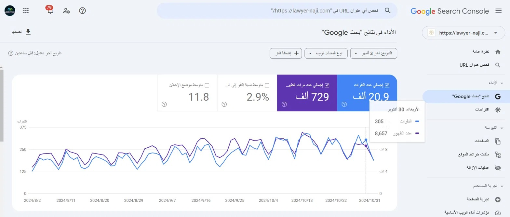
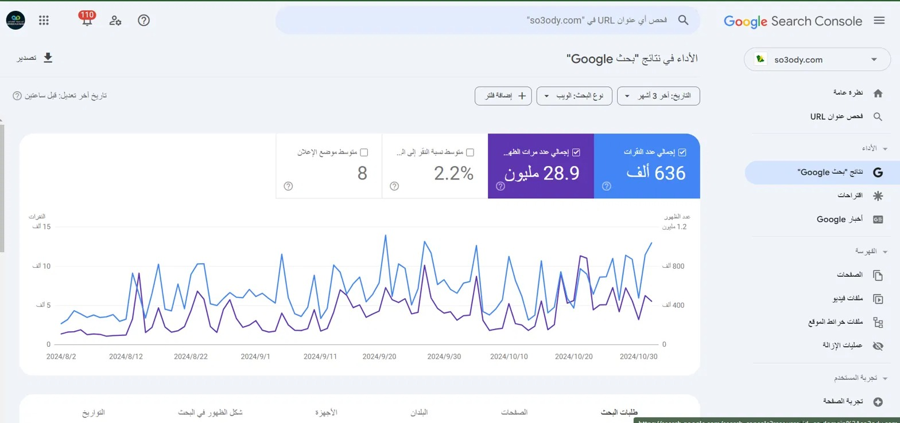
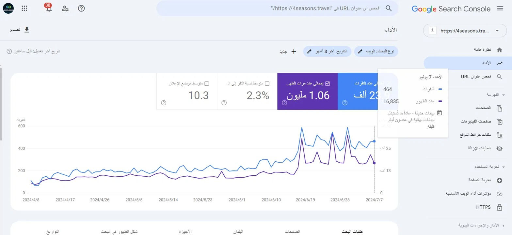
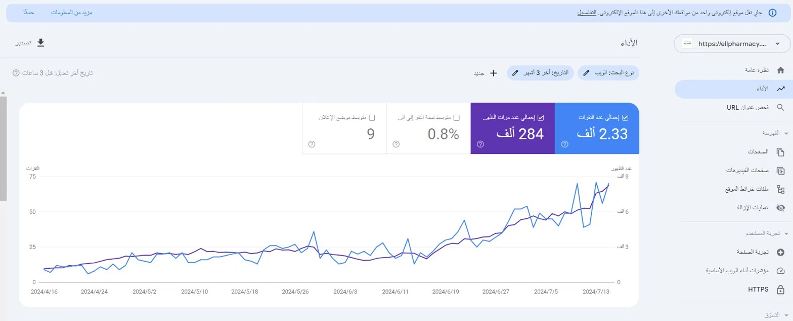
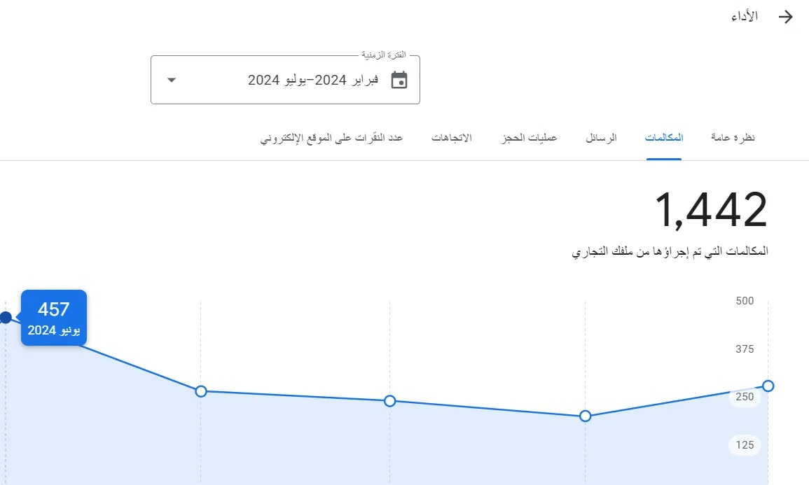
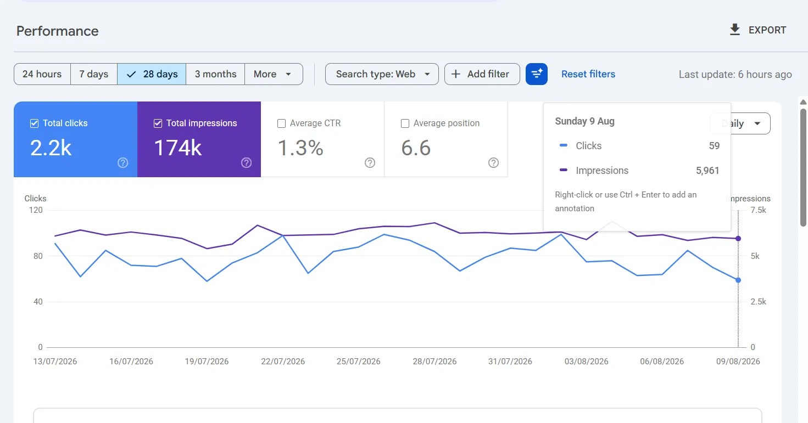
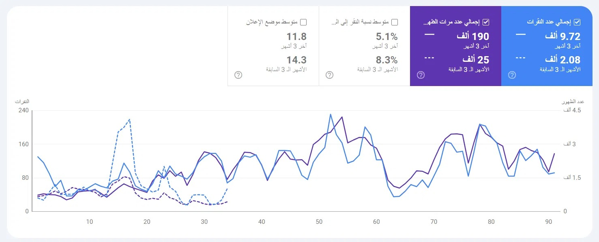
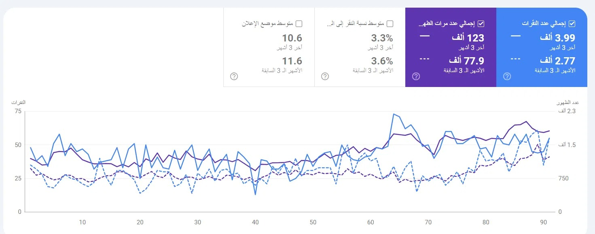
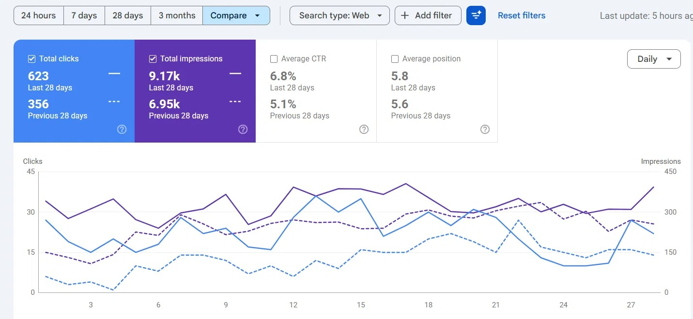

Senior SEO Specialist | +4 سنوات خبرة
أساعد الشركات والمواقع على الظهور في الصفحة الأولى بجوجل وتحقيق نمو عضوي حقيقي في الزيارات والإيرادات. متخصص في تحسين محركات البحث التقني والمحتوى، وبناء الروابط بأسلوب مبني على البيانات الفعلية من Google Search Console وAhrefs وSemrush.
لدي خبرة تمتد لأكثر من 4 سنوات في إدارة استراتيجيات SEO كاملة (On-Page, Off-Page, Technical) لمواقع في قطاعات متنوعة: خدمات قانونية، صحة وصيدليات، سياحة وسفر، ومواقع محتوى ضخمة الحركة.
أعمل بمنهجية قائمة بالكامل على البيانات — كل قرار SEO مبني على أرقام حقيقية من Google Search Console وGoogle Analytics، وليس تخمينًا. هدفي دائمًا واحد: تحويل الزيارات إلى نتائج أعمال ملموسة.
عملت كـ Senior SEO Specialist في B-IT، وقبلها في Awamer Elshabaka، بالإضافة لإدارة مشاريع فريلانس متعددة منذ 2021 حتى الآن.
تحسين محركات البحث (SEO) هو عملية مستمرة لرفع ترتيب موقعك في نتائج البحث المجانية عبر ثلاثة محاور مترابطة:
تحسين العناوين، الأوصاف، بنية المحتوى، والروابط الداخلية بما يتوافق مع نية البحث الفعلية للمستخدم.
بناء سلطة الموقع (Authority) عبر روابط خلفية موثوقة، وإدارة الإشارات المحلية وملفات Google Business.
سرعة الموقع، الفهرسة، الزحف، Core Web Vitals، والبيانات المنظمة — الأساس اللي يبني عليه كل شيء.
مجموعة متكاملة من المهارات التقنية والتحليلية لإدارة استراتيجية SEO من الألف للياء.
تحسين ظهور المواقع في محركات البحث من خلال إدارة استراتيجيات SEO، البحث عن الكلمات المفتاحية، تحسين المحتوى والأداء، وتحليل النتائج لزيادة الزيارات العضوية والوصول للعملاء المستهدفين.
قيادة استراتيجيات SEO عبر عدة مشاريع، تدقيق تقني شامل، وتتبّع مؤشرات الأداء (KPIs) شهريًا.
متابعة الترتيب والتحليلات، بناء استراتيجيات باك لينكس قوية، وتحسين معدلات التحويل عبر UX وCRO.
إدارة مشاريع SEO لعملاء متعددين: بحث كلمات مفتاحية، تحليل منافسين، وتحسين الظهور والزيارات.
كل رقم في هذا القسم مأخوذ مباشرة من لوحات بيانات حقيقية — بدون تقديرات.









ابعتلي تفاصيل مشروعك، وهرد عليك بخطة SEO مبدئية مبنية على تحليل حقيقي لموقعك.